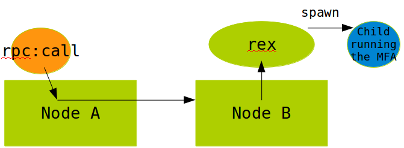
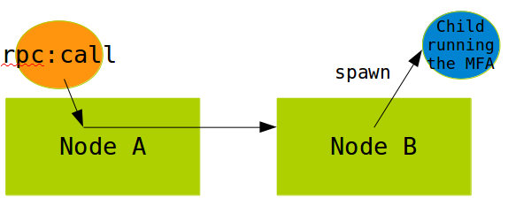

OTP 23 Highlights
OTP 23 has just been released (May 13:th 2020). It has been a long process with three release candidates in February, March and April before the final release. We are very thankful for the feedback we have got regarding the release candidates, which has revealed some bugs and flaws that our internal testing did not find.
This blog post will describe some highlights of what is new in OTP 23.
You can download the readme describing the changes here: OTP 23 Readme. Or, as always, look at the release notes of the application you are interested in. For instance here: OTP 23 Erts Release Notes.
Language #
In OTP 23 we have added some new features to the language and compiler, one has been in the backlog since the bit syntax was introduced and the other is a suggestion from the community.
Matching syntax improvements #
Binary matching #
In binary matching, the size of the segment to be matched is now allowed to be a guard expression. In the example below the variable Size is bound to the first 8 bits and then it is used in an expression (Size-1)*8 for the size of the following binary.
example1(<<Size:8,Payload:((Size-1)*8)/binary,Rest/binary>>) ->
{Payload,Rest}.
Matching on maps #
In the current map matching syntax, the key in a map pattern must be a single value or a literal. This leads to unnatural code if the keys in a map are complex terms.
With OTP 23 the keys in map matching can be guard expressions as you see in new_example2.
The only limitation is that all variables used in a key expression must be previously bound.
Previously you had to do like this:
example2(M, X) ->
Key = {tag,X},
#{Key := Value} = M,
Value.
And now you can do like this:
new_example2(M, X) ->
#{ {tag,X} := Value} = M,
Value.
Below there is an illegal example showing that it is still not supported to use an unbound variable as part of the expression for the key-pattern. In this case Key is not bound and the requirement is that all variables used in a key expression must be previously bound.
illegal_example(Key, #{Key := Value}) -> Value.
Numeric literals with underscore #
It is now allowed to write numeric literals with underscore between the digits for the purpose of readability. But the placement of the underscores is not totally free there are some rules. See example of allowed use below:
305441741123_456
1_2_3_4_5
123_456.789_123
1.0e1_23
16#DEAD_BEEF
2#1100_1010_0011
And in the following example we have some examples of disallowed placement of the underscore:
_123 % variable name
123_
123__456 % only single ‘_’
123_.456
123._456
16#_1234
16#1234_
Distributed spawn and the new erpc module #
Improved spawn #
The spawn operation is improved regarding scalability and performance for the distributed case. That is when spawning a process on another node.
New features are also added, such as a distributed spawn_monitor() BIF. This function creates a new process and sets up a monitor atomically.
The spawn_opt() BIF will also support the monitor option for setting up a monitor atomically while creating a process on another node.
We have also added new spawn_request() BIFs for asynchronous spawning of processes.
spawn_request() supports all options that spawn_opt() already supports.
The spawn improvements described above can also be used to optimize and improve many of the functions in the rpc module but since the new functions will not be 100% compatible we decided to introduce a new module named erpc and will keep the old rpc module as well.
The erpc module implements an enhanced subset of the operations provided by the rpc module.
Enhanced in the sense that it makes it possible to distinguish between returned value, raised exceptions, and other errors.
erpc also has better performance and scalability than the original rpc implementation. This by utilizing the newly introduced spawn_request() BIF.
The rpcmodule now share the same implementation as erpc and by that users of rpc will automatically benefit from the performance and scalability improvements made in erpc.
The pictures below illustrate the old and the new implementation of rpc:call() and shows why the new one is more efficient and scalable.
“old” rpc:call implementation: 
new rcp:call implementation with support in the distribution protocol (spawn request) 
As you can see in the “old” implementation above the rpc:call relies on the rex process on the receiving node to spawn a temporary process to execute the called function. This will make rex to a bottleneck if there are many simultaneous rpc:calls towards the node.
The new solution does not use rex at all and let the spawned process decode the arguments of the call thus avoiding some unnecessary copying of data that occurs in the “old” implementation.
gen_tcp and the new socket module #
In OTP 22 we introduced the new experimental socket API.
The idea behind this API is to have a stable intermediary API that can be used
to create features that are not part of the higher-level gen_* APIs.
We have now come one step further in our plan to replace the inet driver by making it possible to use the gen_tcp API with socket as an optional back-end.
To make it easy to test with existing code using gen_tcp a new option {inet_backend, socket | inet} can be used to select the socket implementation instead of the default inet implementation. This option must be put first in the option list to the functions: gen_tcp:listen, gen_tcp:connect and gen_tcp:fdopen, which are all functions that create a socket. For example like this:
{ok,Socket} = gen_tcp:connect(Addr,Port,[{inet_backend,socket}|OtherOpts])
The returned Socket is a '$inet' tagged 3-tuple instead of a port, so all other API functions will use the right implementation for the socket.
A more general override is to use the Kernel configuration variable inet_backend and set it to socket or inet. For example on the erl command-line as
erl -kernel inet_backend socket
or set it with
ERL_FLAGS="-kernel inet_backend socket"
Help in the shell #
We have implemented EEP 48 which specifies a storage format for API documentation to be used by BEAM languages. By standardizing how API documentation is stored, it will be possible to write tools that work across languages.
The ordinary doc build is extended with the generation of .chunk files for all OTP modules. You can run make docs DOC_TARGETS=chunks to build only the EEP 48 chunks. Running just make docs without setting the DOC_TARGETS variable will build all formats (html, man, pdf, chunks).
Built on these new features we’ve added On-line help in the shell with the functions:
h(Module)
h(Module,Function),
h(Module,Function,Arity)
There are also corresponding functions ht/1,2,3 and hcb/1,2,3 to get help about types and callback functions
We have added a new module shell_docs in stdlib with functions for rendering documentation for a shell. This can be used for instance by Development Environments such as those based on the Language Server Protocol (LSP).
The code module also got a new function, get_doc which returns the doc chunk without loading the module.
See example below for getting documentation for lists:sort/2
4> h(lists,sort,2).
-spec sort(Fun, List1) -> List2
when
Fun :: fun((A :: T, B :: T) -> boolean()),
List1 :: [T],
List2 :: [T],
T :: term().
Returns a list containing the sorted elements of List1,
according to the ordering function Fun. Fun(A, B) is to
return true if A compares less than or equal to B in the
ordering, otherwise false.
ok
Improved tab-completion #
The tab-completion in the shell is also improved. Previously the tab-completion for modules did only work for already loaded modules now this is extended to work for all modules available in the code path. The completion is also extended to work inside the “help” functions h, ht and hcb. You can for example press tab like the example below and get all modules beginning with l:
5> h(l
lcnt leex lists
local_tcp local_udp log_mf_h
logger logger_backend logger_config
logger_disk_log_h logger_filters logger_formatter
logger_h_common logger_handler_watcher logger_olp
logger_proxy logger_server logger_simple_h
logger_std_h
logger_sup
Or complete all functions beginning with s in the lists module like this:
5> h(lists,s
search/2 seq/2 seq/3 sort/1 sort/2 split/2
splitwith/2 sublist/2 sublist/3 subtract/2 suffix/2 sum/1
“Container friendly” features #
Take CPU quotas into account #
CPU quotas are now taken into account when deciding the default number of online schedulers.
Thus, automatically making Erlang a good citizen in container environments where quotas are applied, such as docker with the --cpus flag.
EPMD independence #
In a cloud and container based environment it might be interesting to run distributed Erlang nodes without use of epmd and use a hard coded port or an alternative service discovery. Because of this we introduce ways to make it easier to start and configure systems without epmd.
Handshake #
We have improved the handshake during connection setup in the Erlang distribution protocol.
It is now possible to agree on protocol version without depending on epmd or other prior knowledge of peer node version.
Dynamic node name #
Another feature introduced together with the new handshake is the dynamic node name. A dynamic node name is chosen by using the options -name Name or -sname Name and setting Name to undefined.
These options
makes the Erlang runtime system into a distributed node. These flags invokes all network servers necessary for a node to become distributed; see net_kernel. It is also ensured that epmd runs on the current host before Erlang is started; see epmd and the -start_epmd option.
The new feature in OTP 23 is that
Name can be set to undefined and then the node will be started in a special mode optimized to be the temporary client of another node. When enabled the node will request a dynamic node name from the first node it connects to. In addition these distribution settings will be implied:
erl -dist_listen false -hidden -dist_auto_connect never
Because -dist_auto_connect is set to never, the system will have to manually call net_kernel:connect_node/1 in order to start the distribution. If the distribution channel is closed, when a node uses a dynamic node name, the node will stop the distribution and a new call to net_kernel:connect_node/1 has to be made. Note that the node name may change if the distribution is dropped and then set up again.
Note! The dynamic node name feature is supported from OTP 23. Both the temporary client node and the first connected peer node (supplying the dynamic node name) must be at least OTP 23 for it to work.
New options to control the use of epmd #
To give the user more control over the use of epmd some new options to the inet distribution has been added.
-
-dist_listen falseSetup the distribution channel, but do not listen for incoming connection. This is useful when you want to use the current node to interact with another node on the same machine without it joining the entire cluster. -erl_epmd_port PortConfigure a default port that the built-in EPMD client should return. This allows the local node to know the port to connect to for any other node in the cluster.-
-remsh NodeStarts Erlang with a remote shell connected toNode. If no-nameor-snameis given the node will be started using-sname undefined. If Node is using long names then you should give-name undefined. IfNodedoes not contain a hostname, one is automatically taken from the-nameor-snameoption.Note Before OTP-23 the user needed to supply a valid
-snameor-namefor-remshto work. This is still the case if the target node is not running OTP-23 or later.
# starting the E-node test
erl -sname test@localhost
# starting a temporary E-node (with dynamic name) as a remote shell to
# the node test
erl -remsh test@localhost
The erl_epmd callback API has also been extended to allow returning -1 as the creation which means that a random creation will be created by the node.
In addition a new callback function called
listen_port_please has been added that allows the callback to return which listen port the distribution should use. This can be used instead of inet_dist_listen_min/max if the listen port is to be fetched from an external service.
New option for erl_call #
erl_call is a C program originally bundled as an example inside the erl_interface application.
erl_interface contains C-libraries for communicating with Erlang nodes and letting C programs behave as if they are Erlang nodes. They are then called C nodes. erl_call has become popular and is used in products mainly for administration of an Erlang node on the same host. In OTP 23 erl_call is installed under the same path as erl making available in the path without bothering about the erl_interface version.
Another new thing in erl_call is the address option, that can be used to connect directly to a node without being dependent on epmd to resolve the node name.
AFAIK erl_call is being used in the upcoming version of relx (used by rebar3) for the node_tool function.
TLS enhancements and changes #
TLS-1.3 is now supported (in OTP 22 we classed it as experimental) but not yet feature complete. Key features supported are:
- session tickets
- refreshing of session keys
- RSASSA-PSS signatures
- Middlebox compatibility.
The “early data” feature is not yet supported. Early data is an optimization introduced in TLS 1.3 which allows a client to send data to a server in the first round trip of a connection, without waiting for the TLS handshake to complete if the client has spoken to the same server recently.
In OTP 23 TLS 1.3 is per default announced as the preferred protocol version by both client and server. Users who are not explicitly configuring the TLS versions should be aware of this since it can have impact on interoperability.
A new option exclusive is provided for ssl:cipher_suites/2,3 and ssl:versions is extended to better reflect what versions of TLS that are available for the current setup of Erlang/OTP.
Also note that we have removed support for the legacy TLS version SSL-3.0.
SSH #
Two notable SSH features were provided as Pull Requests from open source users, namely support for fetching keys from ssh-agents and TCP/IP port forwarding. Port forwarding is sometimes called tunneling or tcp-forward/direct-tcp. In the OpenSSH client, port forwarding corresponds to the options -L and -R.
Ssh agent stored keys improves the security while port forwarding is often used to get an encrypted tunnel between two hosts. In the area of key handling, the default key plugin ssh_file.erl is rewritten and extended with OpenSSH file format “openssh-key-v1”. A limitation so far is that keys in the new format cannot be encrypted The default plugin now also uses port numbers which increases the security.
The SSH application can now be configured in an Erlang config-file. This gives the possibility to for example change the supported algorithm set without code change.
Crypto #
A new crypto API was introduced in OTP-22.0. The main reason for a new API was to use the OpenSSL libcrypto EVP API that enables HW acceleration, if the machine supports it. The naming of crypto algorithms is also systemized and now follows the schema in OpenSSL.
There are parts of the Crypto app that are using very old APIs while other parts are using the latest one. It turned out that using the old API in the new way, and still keeping it backwards compatible, was not possible.
Therefore the old API is kept for now but it is implemented with new primitives. The Old API is deprecated in OTP-23.0 and will be removed in OTP-24.0.